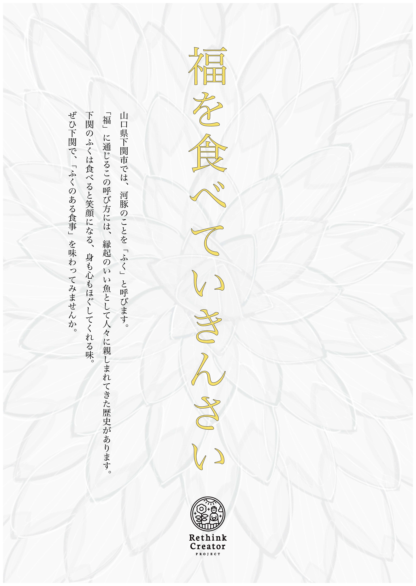

「福のある食事」
Rethink Creative Contest2025 ポスターデザイン

Overview
- 課題制作 制作全般
- 制作時期：2025年 10月
- 使用ツール：Illustrator
Concept
本作は、「食」という日常的な行為に宿る時間と記憶、そして土地に根付いた言葉の力を見つめ直す作品です。 下関で河豚を「ふく」と呼ぶ文化には、縁起や人の想いが静かに折り重なっています。 食事は単なる摂取ではなく、土地の歴史や人の営みを身体に迎え入れる行為でもあります。 背景に重なる蓮のかたちは、静かに広がる時間や祈りの層を象徴しています。 本作を通して、何気ない食事の中に潜む「福」と向き合い、自分自身の時間や暮らしをあらためて味わうきっかけが生まれることを願っています。